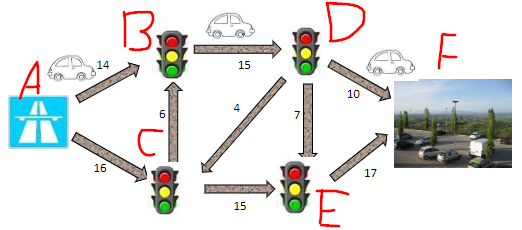
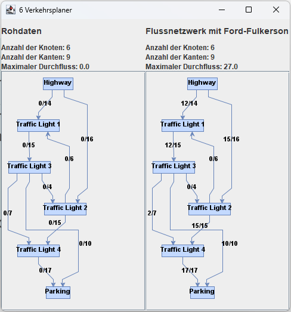

Problem 6 - "Wohin nur mit den Gästen?"
Zum Einweihungsfest werden zahlreiche auswärtige Gäste eingeladen. Reisen diese allerdings alle mit dem Auto an, dann ist ohne hervorragende Verkehrsplanung ein Stau in der Innenstadt vorprogrammiert. Parken können die Autos auf dem Parkplatz des neuen Supermarktes.
Doch wie soll der Verkehr durch die Stadt geleitet werden, dass möglichst viele Fahrzeuge von der Autobahn zum Parkplatz gelangen können, ohne dass sich lange Schlangen vor den Ampeln bilden? Die Kapazität der einzelnen Straßen haben Ihnen die Bürger der Stadt bereits aufgezeichnet.
Sie sollen nun planen, wie viele Wagen über die einzelnen Wege geleitet werden sollen.
Modellierung des Problems
Das Problem lässt sich als Graphenmodell mit gerichteten Kanten darstellen. Die Autobahn, die Ampeln und der Parkplatz sind die Knoten, die Straßen sind die Kanten. Die Kosten der Kanten sind die Kapazität für Fahrzeuge der Straßen.
Es wird die jeweilige Anzahl an Fahrzeugen gesucht, die über die einzelnen Kanten geführt werden sollen, damit die Fahrzeuge ohne Stau zum Parkplatz gelangen.
Um den Graph zu modellieren werden die Java-Bibliotheken JGraphT und JGraphX verwendet. Mit JGraphT wird der Graph als Datenstruktur modelliert. Mit JGraphX wird der Graph als Grafik dargestellt und auf dem Bildschirm dargestellt.
Die Eingabe
Das Bild der Aufgabenstellung wurde mit Buchstaben von A - F beschriftet und dienen als Bezeichnung für die Knoten. Die Werte der Kanten werden auch aus der Grafik übernommen.
Die Eingabe besteht aus einem Graphen, der aus Kanten und Knoten besteht. Diese werden aus einer .txt Datei gelesen und in eine Instanz der Klasse AdjazenzMatrix.java geladen. Diese Instanz dient als Basis für die Berechnung des minimalen Spannbaums.

Die Ausgabe
Die Ausgabe wird als Graph in einem Fenster dargestellt und in die Datei 6 Verkehrsplaner.txt geschrieben. Das Fenster besteht zwei Hälften. Auf der linken Seite wird der Eingabegraph dargestellt. Auf der rechten Seite wird der Ausgabegraph dargestellt. In diesem Graphen entsprechen die Werte der Kanten die Anzahl der Autos, die über die jeweilige Straße geführt werden sollen.
Vor der Ausgabe werden die inversen/negativen Kanten entfernt. Diese werden nicht benötigt, da sie keine Rolle spielen.
Ein korrekte Ausgabe erfüllt folgende Eigenschaften:
-
Alle Knoten müssen von dem ersten Knoten A erreichbar sein.
-
Der Fluss der Kanten muss positiv und ganzzahlig sein.
-
Der Fluss der Kanten darf nicht größer als deren Kapazität sein.
-
Der maximale Fluss muss gleich der Summe der Kapazitäten der Kanten sein, die von A ausgehen und in dem letzten Knoten enden.
-
Der maximale Fluss muss maximal sein, also es darf keine andere Flussverteilung geben, die einen höheren Fluss ergibt.
-
Der Graph muss zusammenhängend und zyklusfrei sein.
-
Die Kanten müssen gerichtet sein.
-
Alle Knoten des Eingabe-Graphen müssen im Ausgabe-Graphen enthalten sein.

Geeignete Algorithmen
Es gibt verschiedene Algorithmen, die verwendet werden können, um den maximalen Fluss in einem gerichteten Graph zu berechnen. Einige dieser Algorithmen sind:
Ford-Fulkerson-Algorithmus: Dieser Algorithmus ist ein iterativer Algorithmus, der in jedem Schritt den Fluss durch einen Pfad erhöht, der vom Quellknoten zum Zielknoten führt und dessen Kapazität noch nicht vollständig ausgeschöpft ist. Der Algorithmus endet, wenn kein solcher Pfad mehr existiert.
Dinic-Algorithmus: Dieser Algorithmus ist ebenfalls ein iterativer Algorithmus, der den Fluss durch den Graph in jedem Schritt erhöht, indem er einen Pfad vom Quellknoten zum Zielknoten sucht, dessen Kapazität noch nicht vollständig ausgeschöpft ist. Im Gegensatz zum Ford-Fulkerson-Algorithmus verwendet der Dinic-Algorithmus jedoch eine Heuristik, um schneller zum Ergebnis zu gelangen.
Edmonds-Karp-Algorithmus: Dieser Algorithmus ist eine Variation des Ford-Fulkerson-Algorithmus und verwendet auch eine Heuristik, um schneller zum Ergebnis zu gelangen. Im Gegensatz zum Dinic-Algorithmus verwendet der Edmonds-Karp-Algorithmus jedoch eine Breitensuche statt einer Tiefensuche, um Pfade im Graph zu finden.
Preflow-Push-Algorithmus: Dieser Algorithmus ist ein schneller, parallelisierbarer Algorithmus, der den Fluss durch den Graph in jedem Schritt erhöht, indem er einen Pfad vom Quellknoten zum Zielknoten sucht, dessen Kapazität noch nicht vollständig ausgeschöpft ist. Im Gegensatz zu den anderen Algorithmen, die hier aufgeführt sind, ist der Preflow-Push-Algorithmus jedoch nicht iterativ, sondern arbeitet in einem einzelnen Durchgang.
Die Laufzeit des Algorithmus
Die Laufzeit der Funktion bfs() ist O(V + E). In jedem Schritt wird ein Knoten aus der Warteschlange entfernt und die Nachbarknoten des Knotens werden in die Warteschlange aufgenommen. Da jeder Knoten nur einmal in die Warteschlange aufgenommen wird und jede Kante nur einmal betrachtet wird, beträgt die Laufzeit O(V + E).
Die Laufzeit des Ford-Fulkerson-Algorithmus ist O(V * E^2). Der Algorithmus wird in jedem Schritt iterativ ausgeführt, bis kein Pfad mehr vom Quellknoten zum Zielknoten verfügbar ist, der dessen Kapazität noch nicht vollständig ausgeschöpft hat. In jedem Schritt wird eine Breitensuche ausgeführt, um einen solchen Pfad zu finden.
Da am Ende der fordFulkerson(int[][] matrix) Funktion noch eine Ausgabematrix erzeugt wird erhöht sich die Laufzeit um O(V^2). Mit der gleichen Laufzeit werden zusätzlich noch die inversen Kanten des Graphen entfernt.
Daraus folgt eine Laufzeit von O(V * E^2 + V^2).
Die Implementierung des Algorithmus
Zur Lösung des Problems wurde der Ford-Fulkerson-Algorithmus verwendet. Genauer gesagt wurde der Edmonds-Karp-Algorithmus verwendet, da dieser eine Breitensuche verwendet, um Pfade im Graph zu finden.
Zuerst wird die Matrix matrix in eine echte Kopie output kopiert. Die echte Kopie wird später als Ausgabe verwendet.
Danach wird ein Eltern-Array parent erstellt, das die Elternknoten der Knoten im Graph speichert. Dieses Array wird später verwendet, um den Pfad vom Quellknoten zum Zielknoten zu finden.
Als nächstes wird eine Breitensuche ausgeführt, um einen Pfad vom Quellknoten zum Zielknoten zu finden, dessen Kapazität noch nicht vollständig ausgeschöpft ist. Die Breitensuche wird durch die Funktion bfs() ausgeführt. Die Funktion bfs() gibt true zurück, wenn ein Pfad gefunden wurde, der vom Quellknoten zum Zielknoten führt und dessen Kapazität noch nicht vollständig ausgeschöpft ist. Andernfalls wird false zurückgegeben.
Als Datenstruktur der bfs() Funktion wird eine LinkedList verwendet. Die Laufzeit der poll() Funktion beträgt O(1), da die LinkedList eine doppelt verkettete Liste ist. Die Laufzeit der add() Funktion beträgt ebenfalls O(1), da die LinkedList eine doppelt verkettete Liste ist.
Wenn ein solcher Pfad gefunden wurde, wird der minimale Fluss des Pfades berechnet. Der minimale Fluss des Pfades ist die kleinste Kapazität, die noch nicht vollständig ausgeschöpft ist. Dieser Wert wird dann zum maximalen Fluss des Graphen addiert.
Zuletzt wird eine neue Ausgabematrix erstellt, die nur aus dem positiven Fluss des Graphen besteht.